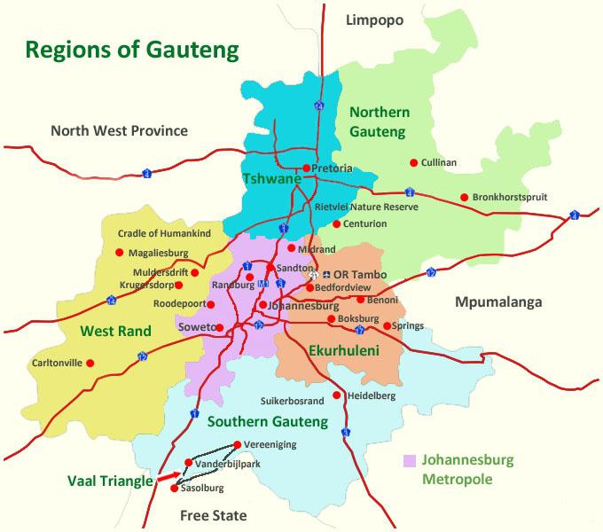

Gauteng

Gauteng is a northern province of South Africa, with most of its territory defined by 2 of the nation's largest cities. Pretoria is the de facto national capital, with the Voortrekker Monument to 19th-century Dutch residents and Kruger House, home of 19th-century president Paul Kruger. Johannesburg has many sites relating to the country’s 20th-century struggle to end segregation, including the Apartheid Museum.
In Soweto township, Mandela House is a museum dedicated to civil rights leader and ex-president Nelson Mandela, while to the north in the Magaliesberg Mountains lies the archaeological complex known as the Cradle of Humankind. It's a vast underground area including the Sterkfontein Caves, where early hominid skeletons have been uncovered, and the Maropeng Visitor Centre, with exhibits on early life. Other Magaliesberg diversions range from birding and gorge hiking to white-water rafting the Crocodile River. Wildebeest, zebras, jackals, baboons and hippos roam the region’s nature reserves, including Rietvlei and Suikerbosrand.
Click here for more info on Gauteng